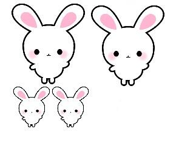
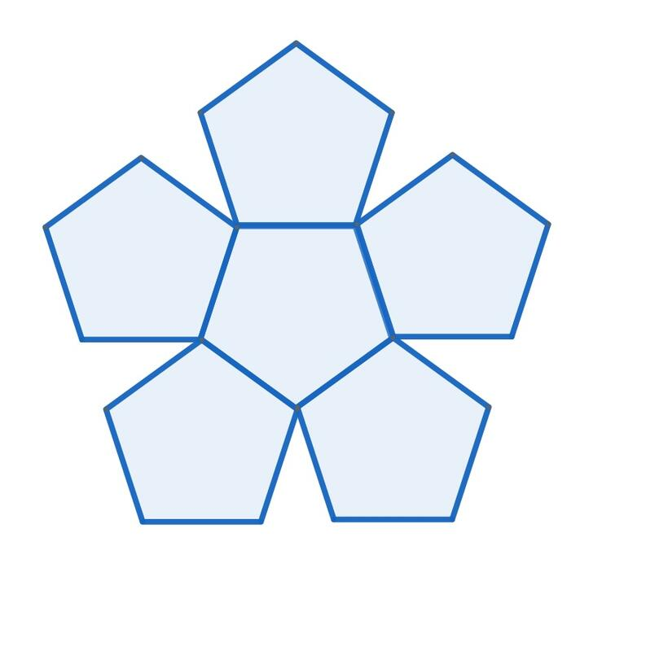

文字
背景
行間


カテゴリ:閑話
読書案内の勧め
 昨日、佐倉高校図書館より「新着図書案内」と「読書案内」が配られました。新着図書の一覧を見るたびに本当にすばらしい選書で、これらを図書館から借りてすぐに読めるのはすばらしく幸せなことだと毎回思います。また、そこには図書委員の生徒さんからのおすすめ本の紹介もありこれがまたすばらしい。その中に大数学者の岡潔先生の「数学を志す人に」がすすめられていて、私自身としては個人的には岡潔先生の本で数学を学んだり、先生の啓蒙書を拝読したりしてましたのでこの本を紹介してくれたことにうれしさを感じました。また、「読書案内」は私が楽しみに心待ちしている先生・生徒への配付物のひとつです。そこには、本校の本のソムリエ高柳先生と佐藤先生からそれぞれ毎回一冊ずつ本が紹介されます。お二人が書かれる本の紹介が俊逸です。これを読むと、お二人の経験や感じ方などがいきいきとした情景描写や心理描写とともになされるなか紹介本への誘いが、さりげなく、しかも奥深く心に染み入ることで本の魅力が高まっていきます。是非、保護者の皆様も御一読されてみてはいかかがでしょうか。さて、今月高柳先生からご紹介のあった「八日目の蝉」にちなんでという訳ではありませんが、今年は今までのところ（７月上旬まで）千葉や東京など関東で蝉の声を聞いた割合が全国で最低だそうです。そういえば、私も聞いていないなぁと思いましたが皆様の周りではどうですか。関東以外でも福島や宮城など梅雨寒の影響が顕著だった地域では同じ状況だそうです。また、話は変わりますが、蝉といえば北米には、ちょうど17年ごとと13年ごとに大量発生する蝉がいて、「素数蝉」とよばれています。普通の蝉とはまったく違うサイクルで生きていて「なぜ17年周期と13年周期で大発生するのか。」というこの難問を日本の生物学者 吉村仁教授が解明し、当時の生物界を驚かせたのは記憶に新しいところです。
昨日、佐倉高校図書館より「新着図書案内」と「読書案内」が配られました。新着図書の一覧を見るたびに本当にすばらしい選書で、これらを図書館から借りてすぐに読めるのはすばらしく幸せなことだと毎回思います。また、そこには図書委員の生徒さんからのおすすめ本の紹介もありこれがまたすばらしい。その中に大数学者の岡潔先生の「数学を志す人に」がすすめられていて、私自身としては個人的には岡潔先生の本で数学を学んだり、先生の啓蒙書を拝読したりしてましたのでこの本を紹介してくれたことにうれしさを感じました。また、「読書案内」は私が楽しみに心待ちしている先生・生徒への配付物のひとつです。そこには、本校の本のソムリエ高柳先生と佐藤先生からそれぞれ毎回一冊ずつ本が紹介されます。お二人が書かれる本の紹介が俊逸です。これを読むと、お二人の経験や感じ方などがいきいきとした情景描写や心理描写とともになされるなか紹介本への誘いが、さりげなく、しかも奥深く心に染み入ることで本の魅力が高まっていきます。是非、保護者の皆様も御一読されてみてはいかかがでしょうか。さて、今月高柳先生からご紹介のあった「八日目の蝉」にちなんでという訳ではありませんが、今年は今までのところ（７月上旬まで）千葉や東京など関東で蝉の声を聞いた割合が全国で最低だそうです。そういえば、私も聞いていないなぁと思いましたが皆様の周りではどうですか。関東以外でも福島や宮城など梅雨寒の影響が顕著だった地域では同じ状況だそうです。また、話は変わりますが、蝉といえば北米には、ちょうど17年ごとと13年ごとに大量発生する蝉がいて、「素数蝉」とよばれています。普通の蝉とはまったく違うサイクルで生きていて「なぜ17年周期と13年周期で大発生するのか。」というこの難問を日本の生物学者 吉村仁教授が解明し、当時の生物界を驚かせたのは記憶に新しいところです。 EHT、VLBI,ブラックホールシャドウ
昨夜の報道によると、国立天文台など世界の約80の研究機関による国際チームが、ブラックホールの撮影に初めて成功したと発表しました。あわせて、イベント・ホライズン・テレスコープ（EHT）によって撮影された超大質量ブラックホールが公開されました。EHTは、超長基線電波干渉計（Very Long Baseline Interferometry: VLBI）という仕組みを用いています。VLBIは世界中に散らばる望遠鏡を同期させ、地球の自転を利用することで、地球サイズの望遠鏡を構成する仕組みです。今回VLBIにより、EHTは例えるなら、月面に置いたゴルフボールが見えるほどの極めて高い解像度を実現できたそうです。ブラックホールの重力によって光が曲げられたり捕まえられたりすることで、ブラックホールシャドウが生まれます。ブラックホールの質量が大きいほど、シャドウも大きくなります。巨大ブラックホールは、名に反して非常にコンパクトな天体です。そのため、これまで直接観測することは不可能だったそうです。今回撮影されたブラックホールシャドウは、地球から約5500万光年先にある「おとめ座銀河団」の「M87」の中心に位置しているブラックホールが作り出したものです。「M87」は直径約12万光年の中に、数兆個の星と約13000個もの球状星団を含む巨大な楕円銀河です。なお今年は、一般相対性理論が歴史的な実験によって初めて実証されてから100年の節目の年に当たり、3年前に重力波が観測されて以来アインシュタインの一般相対性理論を裏付ける結果となったことはすばらいことだと思います。さらに宇宙研究が進むことが期待されます。
3.14159 26535 89793 23846 …
今日3月14日は、多くの国で「円周率の日」とされています。
3.14159 26535 89793 23846 26433 83279 50288 …のその最初の3桁の並びに合わせて制定されています。他に、円周率近似値の日（7月22日、12月21日（閏年は12月20日）など）があります。円周率は円の直径に対する円周の比として定義される数学定数です。もちろん数学だけでなく科学の様々な分野において重要な数学定数です。表記は π で表されますが、これはギリシア語の円周を表す言葉の περίμετρος（ペリメトロス）の頭文字からとったものです。
円周率は、無理数であり、その小数展開は循環しない小数であり、合わせて、どんな有理係数の代数方程式の解ともならない超越数でもあります。数学的にとても魅力的な数です。さて、その円周率を必要な精度まで求めるのには、いろいろな方法があります。アルキメデスの方法として知られているものは、円周が、内接する正ｎ角形の周の長さより長く外接する正ｎ角形の周の長さよりは短いことを利用して円周の取り得る値を挟み込む方法です。2003年東京大学の前期入試の理系の第6問で「円周率が3.05より大きいことを証明せよ」という問題が出たのを思い出します。また、逆正接関数の区分求積法やべき級数展開を用いる方法や派生してマチンの公式など多くの公式が発見されています。いずれにしてもこんな日に円周率について興味を持って調べてみるのはいかがですか。
3.14159 26535 89793 23846 26433 83279 50288 …のその最初の3桁の並びに合わせて制定されています。他に、円周率近似値の日（7月22日、12月21日（閏年は12月20日）など）があります。円周率は円の直径に対する円周の比として定義される数学定数です。もちろん数学だけでなく科学の様々な分野において重要な数学定数です。表記は π で表されますが、これはギリシア語の円周を表す言葉の περίμετρος（ペリメトロス）の頭文字からとったものです。
円周率は、無理数であり、その小数展開は循環しない小数であり、合わせて、どんな有理係数の代数方程式の解ともならない超越数でもあります。数学的にとても魅力的な数です。さて、その円周率を必要な精度まで求めるのには、いろいろな方法があります。アルキメデスの方法として知られているものは、円周が、内接する正ｎ角形の周の長さより長く外接する正ｎ角形の周の長さよりは短いことを利用して円周の取り得る値を挟み込む方法です。2003年東京大学の前期入試の理系の第6問で「円周率が3.05より大きいことを証明せよ」という問題が出たのを思い出します。また、逆正接関数の区分求積法やべき級数展開を用いる方法や派生してマチンの公式など多くの公式が発見されています。いずれにしてもこんな日に円周率について興味を持って調べてみるのはいかがですか。
閑話 その９ フィボナッチ数列と黄金比
フィボナッチ数列｛1，1，2，3，5，8，13，21，34・・・｝と黄金比 Φ には、いろいろな関係がありそうです。
フィボナッチ数列 { Fn } の定義式は F1＝１、F2＝２、 Fn＝ Fn-1 ＋ Fn-2 （ｎ≧３）（以下、この関係式を漸化式とよぶ。）でした。定義式からフィボナッチ数列の各項はすべて整数であることは明らかですね。このとき、ｎ番目の数をいちいち足していかなくても求められると便利ですよね。つまり第ｎ項を直接求められる式がほしいわけです。数学では、数列の隣接３項間漸化式から一般項を求める問題を解いた人にはお馴染みですが、ちょっと考えてみましょう。
フィボナッチ数列の漸化式 Fn＝ Fn-1 ＋ Fn-2 ・・・①に準じて rn = rn-1 + rn-2 ・・・②を満たす（ゼロでない）r の累乗 rn の数列が存在するか調べてみましょう。②の両辺を rn-2 で割ると、 r２ = r + １ つまり r２ - r - １ = 0
$$r=\frac{1+\sqrt{5 } }{2},\frac{1-\sqrt{5 } }{2}$$ ここで、閑話その６の表記を使って $$\phi=\frac{1+\sqrt{5 } }{2},\phi'=\frac{1-\sqrt{5 } }{2}$$
とすると r = Φ または r = Φ’ のとき、累乗 rn はフィボナッチ数列の漸化式①を満たすということです。このことから、
問１ A と B を定数とするとき、任意の数列 Kn = A Φｎ＋B Φ’ｎ ・・・③も①の漸化式を満たしていることを確かめてください。
問２ ここで K1 と K2 を １として、A と B を求めてください。
以上のことと、$$\sqr{5}=\phi-\phi'$$ を使うと、フィボナッチ数列の一般項 Fn は、
$$F_n=\frac{\phi^n-\phi'^n}{\phi-\phi'}=\frac{1}{\sqr{5 } }\left[\left(\frac{1+\sqr{5 } }{2}\right)^n-\left(\frac{1-\sqr{5 } }{2}\right)^n\right]$$ ・・・④
となります。この④の式からはフィボナッチ数列の各項が、整数になるようには見えませんね。
問３ ④の式で最初の何項か実際に（工夫して）計算してみましょう。（その６の復習）
フィボナッチ数列 { Fn } の定義式は F1＝１、F2＝２、 Fn＝ Fn-1 ＋ Fn-2 （ｎ≧３）（以下、この関係式を漸化式とよぶ。）でした。定義式からフィボナッチ数列の各項はすべて整数であることは明らかですね。このとき、ｎ番目の数をいちいち足していかなくても求められると便利ですよね。つまり第ｎ項を直接求められる式がほしいわけです。数学では、数列の隣接３項間漸化式から一般項を求める問題を解いた人にはお馴染みですが、ちょっと考えてみましょう。
フィボナッチ数列の漸化式 Fn＝ Fn-1 ＋ Fn-2 ・・・①に準じて rn = rn-1 + rn-2 ・・・②を満たす（ゼロでない）r の累乗 rn の数列が存在するか調べてみましょう。②の両辺を rn-2 で割ると、 r２ = r + １ つまり r２ - r - １ = 0
$$r=\frac{1+\sqrt{5 } }{2},\frac{1-\sqrt{5 } }{2}$$ ここで、閑話その６の表記を使って $$\phi=\frac{1+\sqrt{5 } }{2},\phi'=\frac{1-\sqrt{5 } }{2}$$
とすると r = Φ または r = Φ’ のとき、累乗 rn はフィボナッチ数列の漸化式①を満たすということです。このことから、
問１ A と B を定数とするとき、任意の数列 Kn = A Φｎ＋B Φ’ｎ ・・・③も①の漸化式を満たしていることを確かめてください。
問２ ここで K1 と K2 を １として、A と B を求めてください。
以上のことと、$$\sqr{5}=\phi-\phi'$$ を使うと、フィボナッチ数列の一般項 Fn は、
$$F_n=\frac{\phi^n-\phi'^n}{\phi-\phi'}=\frac{1}{\sqr{5 } }\left[\left(\frac{1+\sqr{5 } }{2}\right)^n-\left(\frac{1-\sqr{5 } }{2}\right)^n\right]$$ ・・・④
となります。この④の式からはフィボナッチ数列の各項が、整数になるようには見えませんね。
問３ ④の式で最初の何項か実際に（工夫して）計算してみましょう。（その６の復習）
閑話 黄金比とフィボナッチ数列 その８
前回お話しした数列は、初項と第2項が与えれれていて第3項以降の各項は前の2項の和になっている数列でした。
ここで、初項と第2項を１とした数列{1,1,2,3,5,8,13,21,34,55,89,144,233・・・}はフィボナッチ数列として有名です。
・黄金比とフィボナッチ数列との関係を見てみよう。
黄金比 Φ の連分数による表現
$$\phi=1+\frac{1}{1+\frac{1}{1+\frac{1}{1+\frac{1}{1+\cdots}$$
を使って Φ の逐次近似値(連分数を途中で切りながら)を計算してみましょう。
１＝1
$$1+\frac{1}{1}=\frac{2}{1}$$
$$1+\frac{1}{1+1}=1+\frac{1}{2}=\frac{3}{2}$$
$$1+\frac{1}{1+\frac{1}{1+1 } }=1+\frac{1}{\frac{3}{2 } }=\frac{5}{3}$$
$$1+\frac{1}{1+\frac{1}{1+\frac{1}{1+1 } } }=1+\frac{1}{\frac{5}{3 } }=\frac{8}{5}$$
$$1+\frac{1}{1+\frac{1}{1+\frac{1}{1+\frac{1}{1+1 } } } }=1+\frac{1}{\frac{8}{5 } }=\frac{13}{8}$$
問 上記の黄金比に至る逐次近似値とフィボナッチ数列の連続する各項の比との関連性について考察してください。
ここで、初項と第2項を１とした数列{1,1,2,3,5,8,13,21,34,55,89,144,233・・・}はフィボナッチ数列として有名です。
・黄金比とフィボナッチ数列との関係を見てみよう。
黄金比 Φ の連分数による表現
$$\phi=1+\frac{1}{1+\frac{1}{1+\frac{1}{1+\frac{1}{1+\cdots}$$
を使って Φ の逐次近似値(連分数を途中で切りながら)を計算してみましょう。
１＝1
$$1+\frac{1}{1}=\frac{2}{1}$$
$$1+\frac{1}{1+1}=1+\frac{1}{2}=\frac{3}{2}$$
$$1+\frac{1}{1+\frac{1}{1+1 } }=1+\frac{1}{\frac{3}{2 } }=\frac{5}{3}$$
$$1+\frac{1}{1+\frac{1}{1+\frac{1}{1+1 } } }=1+\frac{1}{\frac{5}{3 } }=\frac{8}{5}$$
$$1+\frac{1}{1+\frac{1}{1+\frac{1}{1+\frac{1}{1+1 } } } }=1+\frac{1}{\frac{8}{5 } }=\frac{13}{8}$$
問 上記の黄金比に至る逐次近似値とフィボナッチ数列の連続する各項の比との関連性について考察してください。
閑話 その７ 黄金比
ある人が階段を登ろうとしています。その人は、１歩で登れるのは、最高で２段までとします。つまり、階段を１歩では１段か２段で登れるとします。いま階段が、ｎ段としたら、登り方は何通り（Fｎ）あるか考えてみましょう。
１段しかない階段なら登り方は１通り (1) しかないので F1＝１
２段だと、１段目から１段で登る方法 (1)+1 か、最初から一気に２段で登る (2) かの２通りとなるので F2＝２
３段だと、２段目から１段で登る方法 ((1)+1)+1、(2)+1 と１段目から２段で登る方法 (1)+2 の３通りあるので、F3＝３
４段だと、３段目から１段で登る方法 (((1)+1)+1)+1、((2)+1)+1、((1)+2)+1 と２段目から２段で登る方法 ((1)+1)+2、(2)+2の５通りなので、F4＝５
５段だと、4段目から１段で登る方法 ((((1)+1)+1)+1)+1、(((2)+1)+1)+1、(((1)+2)+1)+1、(((1+1))+2)+1、((2)+2)+1と３段目から２段で登る方法 (((1)+1)+1)+2、((2)+1)+2、((1)+2)+2 の８通りあるので、F5＝８ となります。
こうして、可能な登り方の数列 { Fn } は、{１，２，３，５，８、・・・}
となります。
ｎ段の階段の登り方を考えてできた数列の第３項以降の各項 Fn は、その１段前までの登り方 Fn-1 とさらにその１段前までの登り方 Fn-2 との和として表すことができます。
つまり、数列 { Fn } は、F1＝１、F2＝２、 Fn＝ Fn-1 ＋ Fn-2 （ｎ≧３）で
帰納的に定義される数列となります。
１段しかない階段なら登り方は１通り (1) しかないので F1＝１
２段だと、１段目から１段で登る方法 (1)+1 か、最初から一気に２段で登る (2) かの２通りとなるので F2＝２
３段だと、２段目から１段で登る方法 ((1)+1)+1、(2)+1 と１段目から２段で登る方法 (1)+2 の３通りあるので、F3＝３
４段だと、３段目から１段で登る方法 (((1)+1)+1)+1、((2)+1)+1、((1)+2)+1 と２段目から２段で登る方法 ((1)+1)+2、(2)+2の５通りなので、F4＝５
５段だと、4段目から１段で登る方法 ((((1)+1)+1)+1)+1、(((2)+1)+1)+1、(((1)+2)+1)+1、(((1+1))+2)+1、((2)+2)+1と３段目から２段で登る方法 (((1)+1)+1)+2、((2)+1)+2、((1)+2)+2 の８通りあるので、F5＝８ となります。
こうして、可能な登り方の数列 { Fn } は、{１，２，３，５，８、・・・}
となります。
ｎ段の階段の登り方を考えてできた数列の第３項以降の各項 Fn は、その１段前までの登り方 Fn-1 とさらにその１段前までの登り方 Fn-2 との和として表すことができます。
つまり、数列 { Fn } は、F1＝１、F2＝２、 Fn＝ Fn-1 ＋ Fn-2 （ｎ≧３）で
帰納的に定義される数列となります。
問１ ここで違う問題を考えてみましょう。ある男が、うさぎの番（つがい）を１対、壁で囲まれた場所に放しました。ウサギの番については、毎月新しい番を生み、生まれた番も次の月から番を生むとします。そしてウサギは死なないとすると１年間に何対のウサギが生まれるでしょうか。
問２ ここで数列 { Fn }を次のようにつくります。まず、F1、F2 を好きな数に決めます。その２つの数で和を作り3番目の数 F3 とします。更に、2番目と3番目の数の和を作り４番目の数 F4 とします。この操作を繰り返して20番目くらいまでできたら数列の比 を計算してみてください。$$\lim_{n\to \infty}\frac{F_n}{F_{n-1 } }$$ はどんな値に近づくでしょう。
を計算してみてください。$$\lim_{n\to \infty}\frac{F_n}{F_{n-1 } }$$ はどんな値に近づくでしょう。
問２ ここで数列 { Fn }を次のようにつくります。まず、F1、F2 を好きな数に決めます。その２つの数で和を作り3番目の数 F3 とします。更に、2番目と3番目の数の和を作り４番目の数 F4 とします。この操作を繰り返して20番目くらいまでできたら数列の比
閑話 その６ 黄金比
さて、そろそろ Φ について慣れてきた？ところですが、ここでちょっと復習しておきましょう。
Φ は、2次方程式 $${\phi}^2-{\phi}-1=0$$ の正の解となりますので
$${\phi}=\frac{1+\sqrt{5 } }{2}$$ でした。そして、もう一つの負の解を Φ´ とすると、
$${\phi}^{\prime}=\frac{1-\sqrt{5 } }{2}$$ ですからこれを Φ で表すと、$${\phi}'=-\frac{1}{\phi}$$ ・・・（ア）となります。
問１ （ア）の関係を確かめてください。
問２ Φ と Φ’ の積と和を求めてください。
Φ に１を足すと２乗になったり、１を引くと逆数になったり
Φ っておもしろくないですか。
「閑話 その2」 の問２の問題ですが、
$${\phi}^2={\phi}+1$$ の両辺に Φ を掛けると $${\phi}^3={\phi}^2+{\phi}$$
この操作を続けていくと $${\phi}^{n}={\phi}^{n-1}+{\phi}^{n-2}$$ となります。
つまり、Φ の任意のべき乗は、その前のべき乗とさらに一つ前のべき乗を足せばいいことがわかります。
ここで、初項１、公比 Φ の数列 $$\lbrace{1,\phi,\phi^2,\phi^3,\phi^4, \phi^5,\cdots}\rbrace$$ を考えます。
いままで見てきたことから、Φ のべき乗を、Φ の１次の項だけで書き換えることができます。
実際に計算してみると $${\phi}^2={\phi}+1$$ ですから、
$${\phi}^3={\phi}^2+{\phi}={(}{\phi}+1{)}+{\phi}=2{\phi}+1$$
$${\phi}^4={\phi}^3+{\phi}^2={(}2{\phi}+1{)}+{(}{\phi}+1{)}=3{\phi}+2$$
$${\phi}^5={\phi}^4+{\phi}^3={(}3{\phi}+2{)}+{(}2{\phi}+1{)}=5{\phi}+3$$
$${\phi}^6={\phi}^5+{\phi}^4={(}5{\phi}+3{)}+{(}3{\phi}+2{)}=8{\phi}+5$$
したがって、もとの数列は、$$\lbrace{1,\phi,\phi+1,2\phi+1,3\phi+2, 5\phi+3,8\phi+5,\cdots}\rbrace$$ となります。
ここで Φ の係数に着目すると、｛１，１，２，３，５，８、・・・・｝
となります。この数列どこかで見たことありませんか。理系の人にはおなじみですよね。これについては次回また。
Φ は、2次方程式 $${\phi}^2-{\phi}-1=0$$ の正の解となりますので
$${\phi}=\frac{1+\sqrt{5 } }{2}$$ でした。そして、もう一つの負の解を Φ´ とすると、
$${\phi}^{\prime}=\frac{1-\sqrt{5 } }{2}$$ ですからこれを Φ で表すと、$${\phi}'=-\frac{1}{\phi}$$ ・・・（ア）となります。
問１ （ア）の関係を確かめてください。
問２ Φ と Φ’ の積と和を求めてください。
Φ に１を足すと２乗になったり、１を引くと逆数になったり
Φ っておもしろくないですか。
「閑話 その2」 の問２の問題ですが、
$${\phi}^2={\phi}+1$$ の両辺に Φ を掛けると $${\phi}^3={\phi}^2+{\phi}$$
この操作を続けていくと $${\phi}^{n}={\phi}^{n-1}+{\phi}^{n-2}$$ となります。
つまり、Φ の任意のべき乗は、その前のべき乗とさらに一つ前のべき乗を足せばいいことがわかります。
ここで、初項１、公比 Φ の数列 $$\lbrace{1,\phi,\phi^2,\phi^3,\phi^4, \phi^5,\cdots}\rbrace$$ を考えます。
いままで見てきたことから、Φ のべき乗を、Φ の１次の項だけで書き換えることができます。
実際に計算してみると $${\phi}^2={\phi}+1$$ ですから、
$${\phi}^3={\phi}^2+{\phi}={(}{\phi}+1{)}+{\phi}=2{\phi}+1$$
$${\phi}^4={\phi}^3+{\phi}^2={(}2{\phi}+1{)}+{(}{\phi}+1{)}=3{\phi}+2$$
$${\phi}^5={\phi}^4+{\phi}^3={(}3{\phi}+2{)}+{(}2{\phi}+1{)}=5{\phi}+3$$
$${\phi}^6={\phi}^5+{\phi}^4={(}5{\phi}+3{)}+{(}3{\phi}+2{)}=8{\phi}+5$$
したがって、もとの数列は、$$\lbrace{1,\phi,\phi+1,2\phi+1,3\phi+2, 5\phi+3,8\phi+5,\cdots}\rbrace$$ となります。
ここで Φ の係数に着目すると、｛１，１，２，３，５，８、・・・・｝
となります。この数列どこかで見たことありませんか。理系の人にはおなじみですよね。これについては次回また。
閑話 黄金比 その５

 正五角形によるフラクタル
正五角形によるフラクタル
その４でお話しした正五角形を使った美しい図形についてのお話です。正五角形を６枚使って「黄金三角形」（底辺に対する横の辺の比が Φ の二等辺三角形）の切込みが入ったひとまわり大きな正五角形（左の図形）を作ります。この正五角形をまた６組集めてさらに大きな正五角形を作りこれをさらに６組集めて都合正五角形216個で作った図形が真ん中の図形です。右の図形は、真ん中の図形をさらに６組集めて作った図形です。この操作はどこまでも続けられます。単純な構成方法を繰り返すしているだけなのに、こんなに美しい図形ができるのは驚きです。
正五角形によるフラクタルその４でお話しした正五角形を使った美しい図形についてのお話です。正五角形を６枚使って「黄金三角形」（底辺に対する横の辺の比が Φ の二等辺三角形）の切込みが入ったひとまわり大きな正五角形（左の図形）を作ります。この正五角形をまた６組集めてさらに大きな正五角形を作りこれをさらに６組集めて都合正五角形216個で作った図形が真ん中の図形です。右の図形は、真ん中の図形をさらに６組集めて作った図形です。この操作はどこまでも続けられます。単純な構成方法を繰り返すしているだけなのに、こんなに美しい図形ができるのは驚きです。
閑話 黄金比 その４
 今回は、「正五角形をコンパスと定規で作図してみよう。」ということでヒントととなる？お話をします。
今回は、「正五角形をコンパスと定規で作図してみよう。」ということでヒントととなる？お話をします。左図は、1辺の長さが１の正五角形ABCDEです。△DABは正五角形ABCDEの対角線を２辺とする二等辺三角形です。頂角が 36° 、両底角は、72° となります。（なぜこうなるかは各自で確かめてください）
今、∠DAB の角の二等分線と辺DB との交点を G とします。
問１ 点G は正五角形ABCDEの対角線DBをどのような比に分ける点でしょうか。
問２ 正五角形ABCDEの対角線の長さはいくつになるでしょう。
問３ 与えられた一片の長さをもとに正五角形をコンパスと定規を使って作図するには何が作れればよいでしょうか。それをどのように利用すればよいでしょうか。
問４ 与えられた一片の長さをもとに正五角形をコンパスと定規を使って作図してみてください。
閑話 黄金比 その３

 縦横の辺の長さの比が黄金比になっている長方形を黄金長方形と呼びます。左上図で言えば、AB：BC＝1 : Φ
縦横の辺の長さの比が黄金比になっている長方形を黄金長方形と呼びます。左上図で言えば、AB：BC＝1 : Φ ここで、この長方形から正方形を切り出すと残った長方形も黄金長方形になります。
左上図でいえば、長方形ABCDから、正方形ABFEを切り取った残りの長方形DEFCが黄金長方形です。
もとの長方形ABCDの辺の長さと小さな長方形DEFCの辺の長さを比べると $$\frac{1}{\phi}$$ 倍となります。ここで、また長方形DEFCから正方形DEGHを切り取った残りの長方形CHGFもまた黄金長方形となり、辺の長さは $$\frac{1}{\phi}$$ 倍となります。この操作を無限に続けていくとどんどん小さな黄金長方形ができ、そのたびに辺の長さは $$\frac{1}{\phi}$$ 倍となります。
左上図のように任意に選んだ元の長方形とそれから正方形を切り取って残った長方形のそれぞれの対角線を引くとどれも同じ一点で交わります。無限に小さくなる長方形は、この点に収束していくわけです。
左下図は、正方形部分に4分の１円を描いて作ったらせんです。きれいですね。
問１ 黄金長方形を作図してみよう。
問２ 黄金比 その２で示した連分数と今回の黄金長方形の分割を考察してみよう。
閑話 黄金比 その２
$$x=1+\frac{1}{1+\frac{1}{1+\frac{1}{1+\frac{1}{1+\cdots}$$ と置くと
$$x=1+\frac{1}{x}$$ とかける。
問１ $$x$$ はどんな値でしょう。
問２ Φ を黄金比とします。 $${\phi}^{n}$$ を $${\phi}^{n-1}$$ と $${\phi}^{n-2}$$ で表わしてください。
 古代エジプト人は Φ を知っていた？pyramidとΦのロマン
古代エジプト人は Φ を知っていた？pyramidとΦのロマンピラミッドが左図のように、底面の１辺の長さが 2a の正方形の四角錐で、各側面の三角形の面積がピラミッドの高さ h を一辺とする正方形の面積に等しくなっていたとします。このとき、各側面の三角形の高さを s として、次の問を考えてください。
問３
閑話 黄金比 その１
先日、参加した千葉県高等学校教育研究会数学部会の春季研究大会の講演で、講師の先生が和算の問題を現在使える公式を使わずに解くとしたらというお話しのなかで「黄金比」を使って解くというものがあり、そういえば「黄金比」自体とっても興味深いものであることを思い出し、今回はその一端に触れてみたい。
黄金比は、エウクレイデス（ユークリッド）が「原論」で明快な定義を与えている。そこでは線分を単純に分けて得られる線分の長さの比で次のように定義し「外中比」（黄金比のこと）と呼んでいる。
 「線分全体と長い切片との比が、長い切片と短い切片との比になる場合、線分は外中比に切り分けられたという。」左図でいえば、
「線分全体と長い切片との比が、長い切片と短い切片との比になる場合、線分は外中比に切り分けられたという。」左図でいえば、
 が成り立っているということ。つまり、短い切片CBの長さを基準にして、$$AB=x,CB=1$$ とおくと $$\frac{x+1}{x}=\frac{x}{1}$$ が成り立つ。よって、両辺に$$x$$を掛けて整理すると、$$x^2-x-1=0$$ ・・・① が得られる。
が成り立っているということ。つまり、短い切片CBの長さを基準にして、$$AB=x,CB=1$$ とおくと $$\frac{x+1}{x}=\frac{x}{1}$$ が成り立つ。よって、両辺に$$x$$を掛けて整理すると、$$x^2-x-1=0$$ ・・・① が得られる。
問２ 問１で求めた正の解をΦ（ファイ）とする。Φの値はどのくらいだろう。
黄金比は、エウクレイデス（ユークリッド）が「原論」で明快な定義を与えている。そこでは線分を単純に分けて得られる線分の長さの比で次のように定義し「外中比」（黄金比のこと）と呼んでいる。
「線分全体と長い切片との比が、長い切片と短い切片との比になる場合、線分は外中比に切り分けられたという。」左図でいえば、問１ $$x$$の2次方程式①を解いてみよう。
問２ 問１で求めた正の解をΦ（ファイ）とする。Φの値はどのくらいだろう。
関数電卓等で近似値を確かめてみよう。
問３ 問２でΦの近似値を関数電卓等でΦ２ や $$\frac{1}{\phi}$$ の近似値を確かめてみよう。
何か、気づいたことはありますか。
問４ ΦとΦ２ 、 $$\frac{1}{\phi}$$ との関係を考えてみよう。
問５ 下の数式の値はいくつでしょう。
$$\sqrt{1+\sqrt{1+\sqrt{1+\sqrt{1+\cdots } } } }$$
以上、興味をもった生徒は校長室まで話に来てください。
次回は 黄金比の連分数表現について
$$1+\frac{1}{1+\frac{1}{1+\frac{1}{1+\cdots}$$
問３ 問２でΦの近似値を関数電卓等でΦ２ や $$\frac{1}{\phi}$$ の近似値を確かめてみよう。
何か、気づいたことはありますか。
問４ ΦとΦ２ 、 $$\frac{1}{\phi}$$ との関係を考えてみよう。
問５ 下の数式の値はいくつでしょう。
$$\sqrt{1+\sqrt{1+\sqrt{1+\sqrt{1+\cdots } } } }$$
以上、興味をもった生徒は校長室まで話に来てください。
次回は 黄金比の連分数表現について
$$1+\frac{1}{1+\frac{1}{1+\frac{1}{1+\cdots}$$